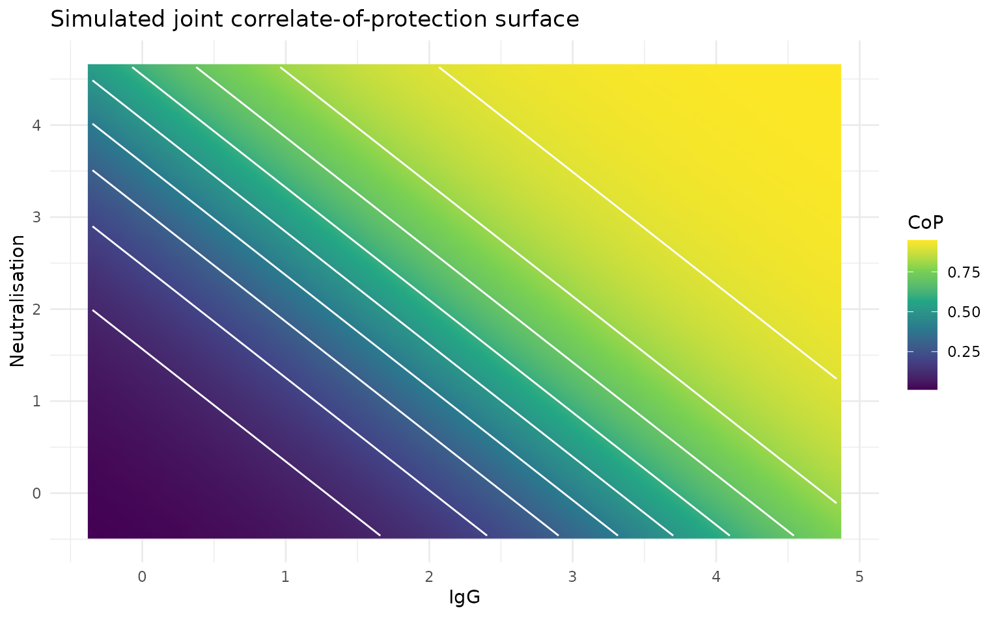

vignettes/multidimensional-surface.Rmd
multidimensional-surface.RmdSeroMulti fits one joint model to 2–4 antibody
biomarkers measured for the same person and time point. Each biomarker
has its own EC50 and positive slope. For
biomarkers, the joint signal is
The CoP rises when the combined biomarker signal increases. This vignette uses two biomarkers, so the fitted CoP can be inspected as a surface. Three- and four-biomarker models use the same interface, but are evaluated at chosen biomarker combinations rather than drawn as a surface.
n <- 300
titres <- cbind(
IgG = rnorm(n, mean = 2.2, sd = 1.0),
Neutralisation = rnorm(n, mean = 1.8, sd = 0.9)
)
true_floor <- 0.05
true_ceiling <- 0.75
true_ec50 <- c(IgG = 2.0, Neutralisation = 1.5)
true_slope <- c(IgG = 1.1, Neutralisation = 0.9)
eta <- as.vector((titres - rep(true_ec50, each = n)) %*% true_slope)
infection_probability <- true_ceiling *
(plogis(-eta) * (1 - true_floor) + true_floor)
infected <- rbinom(n, size = 1, prob = infection_probability)
head(data.frame(titres, infected))
#> IgG Neutralisation infected
#> 1 2.720589 1.666267 1
#> 2 1.120309 1.635343 1
#> 3 2.339238 1.027667 0
#> 4 2.115251 2.662343 0
#> 5 1.533360 1.044831 1
#> 6 -0.316089 1.116248 0The simulation gives a known surface before fitting. It provides a visual reference for the fitted posterior surface below.
surface_grid <- expand.grid(
IgG = seq(min(titres[, "IgG"]), max(titres[, "IgG"]), length.out = 80),
Neutralisation = seq(min(titres[, "Neutralisation"]),
max(titres[, "Neutralisation"]), length.out = 80)
)
grid_eta <- as.vector((as.matrix(surface_grid) -
rep(true_ec50, each = nrow(surface_grid))) %*% true_slope)
grid_risk <- true_ceiling * (plogis(-grid_eta) * (1 - true_floor) + true_floor)
surface_grid$cop <- 1 - grid_risk / true_ceiling
ggplot(surface_grid, aes(x = IgG, y = Neutralisation, fill = cop)) +
geom_raster(interpolate = TRUE) +
geom_contour(aes(z = cop), color = "white") +
scale_fill_viridis_c(name = "CoP") +
labs(title = "Simulated joint correlate-of-protection surface") +
theme_minimal()
#> Warning: The following aesthetics were dropped during statistical transformation: fill.
#> ℹ This can happen when ggplot fails to infer the correct grouping structure in
#> the data.
#> ℹ Did you forget to specify a `group` aesthetic or to convert a numerical
#> variable into a factor?
model <- SeroMulti$new(titre = titres, infected = infected)
model$fit_model(chains = 4, iter = 2000, warmup = 1000, cores = 4)After fitting, plot_surface() summarises posterior CoP
draws across a grid. It returns a ggplot filled-contour plot by default;
type = "persp" draws a base-R perspective surface.
model$plot_surface(type = "contour")
model$plot_surface(type = "persp")For higher-dimensional models, supply a 3- or 4-column matrix. Posterior CoP values can then be obtained for observed or selected biomarker combinations.
three_marker_titres <- cbind(titres, IgA = rnorm(n, 1.6, 0.8))
three_marker_model <- SeroMulti$new(three_marker_titres, infected)
three_marker_model$fit_model(chains = 4, iter = 2000, warmup = 1000, cores = 4)
posterior_cop <- three_marker_model$predict_protection(three_marker_titres)
colMeans(posterior_cop)